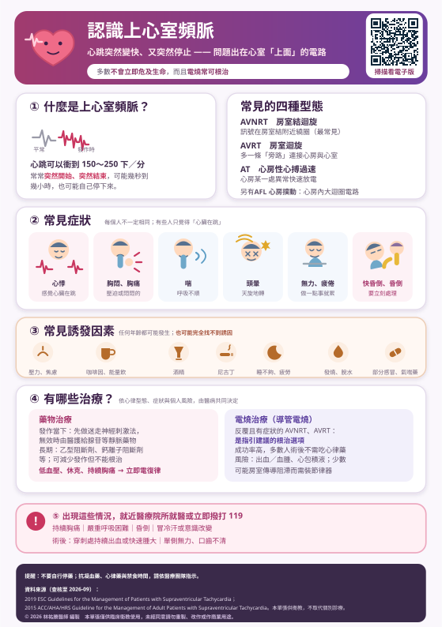

突然「心臟狂跳」、一分鐘一百五到兩百多下，又突然停下來——這很可能是上心室頻脈。
這一頁用白話說明它是什麼、為什麼會發作、發作當下該怎麼做，以及藥物與導管電燒怎麼選。
本頁有表格，在手機上若看不到完整欄位，請用手指在表格區域左右滑動即可看到全部內容。
我們的心臟裡面本來就有一個天生的小發電機，叫做竇房結。它固定放電，電流順著一條固定的路往下傳，心臟收縮一次，我們就跳一下。休息的時候大概一分鐘 60～100 下；走路、緊張、喝了咖啡會快一點，這都很正常。
上心室頻脈的問題出在：有些人的心臟裡，除了那條正常的路以外，還多了一條「岔路」。這條岔路多半是天生就有的，平常安安靜靜，很多人一輩子都不會發現。
可是只要時機湊巧——熬夜、太累、太緊張、喝了濃咖啡——電流跑到那裡就不往下走了，反而順著岔路繞回去，繞下來、再繞回去，一直在原地轉圈圈。電流轉一圈，心臟就被逼著跳一下；它轉得很快，心臟就跟著一分鐘跳到一百五、甚至兩百多下，而且自己停不下來。這就是上心室頻脈。
所以很多人會這樣形容：「本來好好的，突然『啪』一下心臟就開始狂跳，跳到我很不舒服，過一陣子又『啪』一下自己停了。」那個「突然開始、突然結束」，就是它最大的特徵。
要先講清楚的是：這不是心肌梗塞，也不是「心臟壞掉了」。很多人的心臟結構檢查起來完全正常，只是多了那條岔路而已，絕大多數不會直接危及生命。但它會影響工作、開車和生活品質，而且少數型態（例如合併預激症候群 WPW）或本身已經有其他心臟病的人，風險會比較高，就需要積極處理。
「上心室頻脈」其實是一個總稱，底下依短路的位置不同分成幾種。知道自己是哪一種，才能決定要不要電燒、電燒哪裡。
| 型態 | 白話說明 | 常見族群 | 治療重點 |
|---|---|---|---|
| AVNRT 房室結迴旋性頻脈 | 房室結裡本來就有快、慢兩條路，電流在這兩條路之間繞圈。最常見，約占一半以上。 | 中青年、女性較多；心臟結構多半正常 | 電燒成功率很高（約 95～98%），是根治的首選 |
| AVRT 房室旁路迴旋性頻脈 | 心房與心室之間天生多一條「旁路」，電流從正路下去、旁路回來，繞成一圈。若心電圖平時就看得到預激波，稱為 WPW（預激症候群）。 | 較年輕的族群，常從青少年就開始發作 | 電燒可根治；有 WPW 者評估後多建議積極處理 |
| AT 心房頻脈 | 心房某一個位置自己「搶拍」，一直發出比竇房結更快的電流。 | 各年齡；常與心房疾病、肺病、藥物有關 | 先找誘因；藥物或電燒，成功率依位置而異 |
| AFL 心房撲動 | 電流在右心房繞一個固定的大圈，心房每分鐘快到約 300 下，心室依比例跳（常見 150 下左右）。 | 年長者、有心臟病或心房顫動病史者 | 典型撲動電燒成功率 >95%；中風風險與心房顫動相近，須評估抗凝血藥 |
因為治療方式不同。AVNRT 與 AVRT 是最適合用導管電燒「根治」的兩種；心房撲動除了電燒還要考慮中風預防；而如果心電圖顯示有 WPW 預激，某些平常常用的心律藥（如毛地黃、部分鈣離子阻斷劑）反而可能有危險，一定要讓醫師知道。
症狀輕重差很多，同一個人每次發作也可能不一樣。最常被形容的是「心臟突然跳很快、像要從喉嚨跳出來」。
心跳太快時，心臟來不及裝血，打出去的血就變少，腦部一缺血就會暈甚至昏倒。只要曾經因為心跳快而昏倒、或差點昏倒，請務必告訴醫師，這會影響治療的積極程度。
短路的線路是天生就存在的，但它平常安靜不動；下面這些情況會讓心臟變得比較「興奮」，容易把它啟動。避開誘因不能根治，但常常可以明顯減少發作次數。
藥局的綜合感冒藥、鼻塞藥常含假麻黃素（pseudoephedrine），氣喘吸入劑則含支氣管擴張劑，兩者都會讓心跳加快。買之前先跟藥師說「我有上心室頻脈」，請他幫忙挑替代品。但原本醫師開的氣喘藥不要自行停，請回診討論。
診斷的關鍵只有一句話：要抓到「發作當下」的心電圖。沒發作時的心電圖常常完全正常，這也是很多人跑了好幾次急診卻查不出原因的原因。
依照指引，處理順序是：先看人穩不穩定。如果血壓掉、意識不清、持續胸痛，那是急症，直接電擊（同步電復律）；如果人還穩定，就從最安全的方法開始。
迷走神經是踩心臟煞車的神經。用一些動作刺激它，有機會把繞圈的電流打斷、讓心跳「跳回來」。這是指引中第一線、也是最安全的做法。
另外，正在開車、騎車、游泳、站在高處或樓梯上時不要做——先停下來、找安全的地方坐下或躺下。
國外近年已有可由病人自行在家使用的鼻噴劑型鈣離子阻斷劑，用於陣發性上心室頻脈的急性發作。截至本頁更新時，台灣尚未核准上市，現行指引也尚未納入，僅供了解，請勿自行取得使用。實際可否使用請以主治醫師與衛福部核准資訊為準。
停下這一次的發作之後，接著要決定「以後怎麼辦」。目前的做法主要分成兩種：藥物治療與電燒治療。指引的原則是依症狀輕重、發作頻率、心律型態與你的意願，由醫病一起決定，沒有一種做法適合所有人。
| 做法 | 目的 | 能達到什麼 | 最大的限制 |
|---|---|---|---|
| 藥物治療 | 減少發作次數、減輕症狀 | 多數人發作變少、變短、比較不難受 | 要長期每天吃，而且不能根治 |
| 電燒治療 | 把造成短路的那條路阻斷 | 成功後多數人不再發作、也不必再吃心律藥 | 屬侵入性治療，有少數併發症風險 |
| 藥物類別 | 常見副作用 | 要特別小心的情況 |
|---|---|---|
| 乙型阻斷劑 | 疲倦、沒力氣、手腳冰冷、頭暈、心跳變慢、血壓偏低、睡眠變差 | 氣喘或慢性阻塞性肺病者需醫師評估；不可自行突然停藥（心跳可能反彈變更快） |
| 鈣離子阻斷劑 verapamil、diltiazem | 便秘、腳踝水腫、頭暈、心跳變慢、血壓偏低 | 心臟收縮功能不好（心衰竭）者不建議使用；與乙型阻斷劑併用可能讓心跳過慢，須由醫師決定 |
| 抗心律不整藥 flecainide、propafenone 等 | 頭暈、視力模糊、腸胃不適、金屬味 | 限用於沒有結構性心臟病者；少數可能誘發新的心律不整，需定期追蹤心電圖 |
| 如果心電圖有 WPW 預激：某些房室結阻斷藥（如毛地黃、部分鈣離子阻斷劑）在特定情況下反而可能有危險，請務必讓每一位開藥的醫師知道你有 WPW。 | ||
電燒使用的能量有射頻（熱）與冷凍兩種，醫師會依短路的位置選擇；靠近房室結的位置採用冷凍，傷到正常傳導的風險相對較低。
| 心律型態 | 一般成功率 | 說明 |
|---|---|---|
| AVNRT（房室結迴旋） | 約 95～98% | 最常見也最適合電燒的一型，長期復發率低 |
| AVRT（旁路迴旋／WPW） | 約 90～95% | 依旁路長在哪裡而不同，部分位置技術上較困難 |
| 典型心房撲動 | 95% 以上 | 成效明確；但仍需依風險評估是否繼續使用抗凝血藥 |
| 心房頻脈 | 依位置而異 | 異常放電點好找時成效佳，位置刁鑽時較低 |
成功之後，多數人不需要再長期服用心律藥，也不必再擔心什麼時候會突然發作——這是它和藥物治療最大的差別。少數人會復發，多半發生在術後前幾個月，必要時可以再做一次。
| 項目 | 說明 |
|---|---|
| 整體嚴重併發症 | 在有經驗的中心，嚴重併發症的機率一般在 1～2% 以下，多數人恢復順利。 |
| 穿刺處出血、血腫 | 最常見的併發症，通常壓迫與臥床即可改善，少數需進一步處理。 |
| 血管傷害 | 如假性動脈瘤、動靜脈廔管，發生率低，必要時需加壓或手術修補。 |
| 心包積液／心包填塞 | 心臟壁被導管造成滲漏，少見但屬於嚴重併發症，必要時需緊急引流。 |
| 房室傳導阻滯 | 因為短路常常就在房室結旁邊，處理時有極少數（約 1% 以下）可能傷到正常傳導路徑，導致心跳太慢而需要裝永久性心臟節律器。這是簽同意書時一定會說明的一項。 |
| 輻射暴露 | 過程需 X 光透視定位，劑量受嚴格控制；搭配三度空間立體定位系統可大幅減少甚至幾乎不用。 |
| 復發 | 少數人會復發、需要再做一次，多發生在術後前幾個月。 |
對於反覆發作、有明顯症狀的 AVNRT 與 AVRT，2019 年歐洲心臟學會（ESC）與 2015 年 ACC/AHA/HRS 的上心室頻脈指引，都把導管電燒列為第一級（Class I）建議，也就是證據最強、最被推薦的根治方式；長期口服藥物預防則屬於較次一級的建議，多用於不願意或暫時不適合電燒的人。如果心電圖有 WPW 預激，即使症狀不多，也建議接受評估。
在台灣，上心室頻脈的導管電燒符合條件者由健保給付。不過部分耗材（例如三度空間立體定位系統所用的導管、冷凍消融導管、部分特殊導管）可能需要自費，金額依院所公告而不同。術前醫療團隊會逐項說明並請你簽署同意書，請當場確認清楚再簽名。
抗凝血藥、心律藥的服用與停用時機，以及術前的禁食時間，一律依照醫療團隊的指示。自行停藥或自行增減劑量可能造成中風、出血或心律不整再發。有任何疑問，打電話回診間或病房問，不要自己猜。
原則很簡單：人還清醒、還撐得住，就到最近的醫療院所掛急診，先做一張發作當下的心電圖，這對後續治療非常重要。但只要出現胸痛一直不停、喘到說不出話、昏倒過、冒冷汗臉色發白、或單側無力口齒不清，就不要等，直接撥 119。
救護車上就能做心電圖、給氧氣，必要時當場給藥或電擊，而且會直接送到有能力處理的醫院。不論哪一種，都不要自己開車或騎車——路上如果昏倒會更危險，請別人載你或叫救護車。
絕大多數不會。心臟結構正常的人，即使跳到兩百下，通常也能撐住，只是很不舒服。但有兩種情況要特別注意：一是本身已有其他心臟病（如冠心病、心衰竭），心跳太快會讓病情惡化；二是有 WPW 預激症候群又合併心房顫動時，電流可能經旁路很快傳到心室，是少數可能危險的情況——這也是為什麼有 WPW 的人建議接受評估。
大部分人可以，而且規律運動對心臟有好處。原則是：先讓醫師評估你是哪一型、發作時的表現如何。如果曾經在運動中發作到昏倒，或有 WPW，醫師可能會建議先處理再恢復競技型或高強度運動。術後則依第 8 節，約一週後逐步恢復。
不一定。若選擇藥物控制，通常要持續服用才能維持效果；若導管電燒成功，多數人術後不需要再吃心律藥。但如果同時有高血壓、心臟病等其他問題，那些藥還是要繼續。是否停藥、何時停，一律由醫師依術後心電圖與追蹤狀況決定。
有可能，但機率不高。AVNRT 與典型心房撲動的長期成功率一般在 95% 以上。復發多發生在術後前幾個月，若再度出現同樣的「突然狂跳」，請回診做心電圖確認，必要時可以再做一次。
不一定。電燒後心臟需要時間修復，幾週內出現短暫的心悸、偶發早期收縮（俗稱「漏拍」）、心跳比以前稍快都相當常見，多半會慢慢平復。判斷關鍵是：是不是和以前發作時一模一樣的感覺、持續很久、且突然開始突然結束。若是，就要回診。
過程中會使用 X 光透視來看導管位置，所以有輻射暴露，但劑量受到嚴格控制。現在許多中心會搭配三度空間立體定位系統，能大幅減少甚至幾乎不用 X 光。若你正在懷孕或可能懷孕，務必事先告知。
懷孕確實比較容易誘發。處理原則一樣是先做迷走神經刺激法；需要用藥時，醫師會選擇對胎兒影響較小的藥物。電燒一般會盡量避開懷孕期間，若非做不可則會安排在第二孕期並採取減少輻射的措施。懷孕期間有任何心悸，請同時讓心臟科與產科醫師知道。
可以當作提醒你就醫的線索，但不能當作診斷。手錶容易受到手腕晃動、配戴太鬆影響而誤判。最好的做法是：當下錄一段心電圖並存檔，回診時拿給醫師看。真正的診斷仍要靠正式的 12 導程心電圖或醫療級記錄器。
多數上心室頻脈不是遺傳病，家人不需要例行檢查。但如果家族中有人在年輕時猝死、或多位成員都有不明原因的心悸與昏倒，請主動告訴醫師，讓醫師判斷是否需要進一步評估。
本頁內容依下列臨床指引與建議編寫，並針對台灣一般民眾的用語與就醫情境改寫（查核至 2026 年 9 月）：
本頁為一般衛教資訊，不能取代個別診療。每個人的心律型態、其他疾病與用藥都不同，實際的診斷、治療選擇、用藥與手術安排，請以您的主治醫師評估為準。若症狀急性發作且嚴重，請立即就醫或撥打 119。
